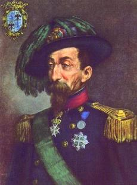

Storia del Corpo
STORIA DEI BERSAGLIERI
(tratto dall'articolo "I fanti piumati con le fiamme cremisi", pubblicato sulla rivista "UNIFORMI E ARMI" del settembre 2001)
Video sulla storia dei Bersaglieri
LA NASCITA DEI BERSAGLIERI
Il corpo dei bersaglieri (ora specialità della fanteria) nacque il 18 giugno del 1836, per volontà del capitano Alessandro La Marmora. L'Ufficiale presentò al re Carlo Alberto uno studio intitolato Proposizione per la formazione di una compagnia Bersaglieri, il Sovrano accolse la proposta e, con R.D. del 18/6/1836, autorizzò la creazione della 1^ Compagnia del Corpo dei Bersaglieri.
La Marmora voleva formare reparti celeri di carabine che dovevano avere una notevole possibilità di rapidi spostamenti caratterizzati da un fuoco preciso ed utile alle piccole distanze; in poche parole, l'intento era quello di avere a disposizione reparti di fanteria celere. I bersaglieri dovevano avere grande resistenza alle fatiche, per effettuare tanti e rapidi spostamenti, ottima mira con la carabina e intelligenza per trovarsi sempre al posto giusto nel momento giusto.
La Marmora riassunse in un decalogo l'istruzione e l'educazione bersaglieresca:

OBBEDIENZA
RISPETTO
CONOSCENZA ASSOLUTA DELLA PROPRIA CARABINA
MOLTO ESERCIZIO DI TIRO
GINNASTICA DI OGNI GENERE FINO ALLA FRENESIA
CAMERATISMO
SENTIMENTO DELLA FAMIGLIA
AMORE AL RE
AMORE ALLA PATRIA
FIDUCIA IN SE' FINO ALLA PRESUNZIONE
Poco dopo la loro costituzione, i bersaglieri furono armati di una speciale carabina ideata e fatta costruire appositamente che aveva il vantaggio, rispetto a quelle in uso, di essere più leggera e di avere un tiro più celere. L'anno successivo, nel 1837, fu costituita la 2^ compagnia bersaglieri. Nel 1848, all'atto della guerra contro l'Austria, le compagnie diventarono 6 più una settima di volontari studenti. Queste 7 compagnie erano suddivise in 2 battaglioni, il primo di 4 compagnie, con quella dei volontari, il secondo di 3.
IL BATTESIMO DEL FUOCO:
LA CAMPAGNA DEL 1848-49
La guerra del 1848 fu per la neonata specialità l'occasione per dimostrare la sua attitudine al combattimento. L'8/3/1848, la 1^ compagnia del 2° battaglione, comandata dal capitano Lions, entrò in contatto nei pressi di Goito con un distaccamento austriaco. Appena informato dell'episodio, La Marmora, divenuto colonnello, accorse tra i bersaglieri e li divise in due gruppi. Gli imperiali abbandonarono il campo e ripiegarono oltre il Mincio facendo saltare il ponte. Rimase intatto un sottile parapetto che naturalmente fu battuto dalla fucileria e dall'artiglieria nemica. La Marmora venne ferito alla mascella e cadde da cavallo. Il sottotenente Galli della Mantica cadde ucciso. Tutto ad un tratto il bersagliere Guastoni attraversò d'un balzo la radura e si gettò sulla spalletta al grido di: Viva il Re! Avanti tutti! Il capitano Griffino lo raggiunse e, superandolo, passò sulla spalletta seguito da molti fanti piumati. Il ponte fu superato e la riva conquistata.
Per questa azione al capitano Griffino venne conferita la Medaglia d'Oro al Valor Militare. Altre azioni furono effettuate dai bersaglieri a Monzambano, Borghetto, Mantova, Villafranca, Pastrengo, Santa Lucia di Verona e Calmasino. Per queste azioni la 1^ compagnia del 1° battaglione e la 2^ del 2° meritarono la Menzione Onorevole (successivamente Medaglia di Bronzo al V.M.). Ma la gloria dei bersaglieri proseguì in altre battaglie: quella della Corona, dove la 3^ compagnia del 10° battaglione meritò una menzione onorevole, di Governolo, Ponti, Monte Torre, Valeggio, Novara. Purtroppo le sorti della guerra non furono positive per noi, e l'armistizio di Vignale firmato il 26/3/1849 restituì la Lombardia all'Austria. Oltre ai reparti citati, ottennero la Menzione Onorevole (successivamente la Medaglia di Bronzo al V.M.) la 9^ del 3° battaglione e la 14^ del 4° per l'infausta battaglia di Novara, ed il battaglione volontari bersaglieri valtellinesi (successivamente passato al 5° btg. di nuova formazione). Nel marzo del 1849 viene creato il 10° battaglione.
1855, LA GUERRA DI CRIMEA E LA MORTE DI LA MARMORA
Il Piemonte, a seguito dell'aiuto che Francia ed Inghilterra diedero alla Turchia, inviò contro la Russia un contingente di 15.000 uomini. Tra questi, i bersaglieri mandarono le prime 2 compagnie di ogni battaglione, per un totale di 10 suddivise in 5 battaglioni provvisori. A capo della 2a^divisione fu posto Alessandro La Marmora, mentre suo fratello Alfonso assunse, dopo la morte del Duca di Genova, il comando del corpo di spedizione. Le truppe presero terra a Balaclava (8/5/1855) e si accamparono nella pianura di Kandikoi. Le truppe dello Zar, che presidiavano il fiume Cernia, avevano attaccato e battuto i britannici a lnkermann. I primi due battaglioni dei bersaglieri, insieme con due brigate piemontesi, dovevano attaccare i russi sul fiume, mentre i franco-inglesi, avrebbero cooperato a Traktir e a Giorgun. Ma i russi si ritirarono verso Makenzie, sorvegliati dai francesi a Fedioukine e dai piemontesi a Kumaya e Giorgun. I russi, forti di due divisioni, li attaccarono nella notte del 15-16 agosto. Sembrava fatta ma, grazie all'intervento della 5^ Brigata piemontese con il 5° battaglione provvisorio bersaglieri, che assaltarono di fianco il nemico, i russi furono sconfitti e inseguiti dai bersaglieri che guadarono il fiume per primi conquistando le rive della Cernia. Ma il 6 giugno, colto da colera, il fondatore del corpo dei bersaglieri Alessandro La Marmora morì in una capanna nei pressi di Kandikoì.
LA CAMPAGNA DEL 1859
Il 26/4/1859, il Piemonte, alleato alla Francia, dichiarò guerra all'Austria. L'esercito piemontese era composto da 5 divisioni e da un corpo cacciatori delle Alpi, comandati dal Generale Giuseppe Garibaldi. Alla campagna parteciparono 10 battaglioni bersaglieri, 2 per ogni divisione, furono decorati il 6° e il 7° battaglione con Medaglia di Bronzo al V. M. per i fatti di Palestro e Borgo Vercelli. Successivamente, il 7° si distinse in maniera particolare a Palestro dove, dopo due giorni di durissima lotta, perse moltissimi dei suoi effettivi. Per quell'azione fu decorato con Medaglia d'Oro al V.M. Nelle giornate successive i reparti bersaglieri combatterono con onore e vero coraggio a San Martino, Pozzolengo, Solferino, Cavriana, Medole e Guidizzolo. Grazie a questi eroici comportamenti, quatto Medaglie di Bronzo al V.M. furono concesse al 1°, al 3° al 4° e al 10° battaglione. La guerra volse al meglio e, dopo l'armistizio di Villafranca, la Lombardia passò al Re di Sardegna. I battaglioni bersaglieri divennero 16. Intanto la Toscana e l'Emilia si erano sollevate e, costituiti due governi provvisori con eserciti propri, domandarono l'annessione al Piemonte. Con i reparti provenienti da quei due Stati i battaglioni bersaglieri passarono a 27, e inoltre furono costituite quattordici compagnie deposito ed il comando del corpo fu affidato ad un ufficiale Generale.
LA CAMPAGNA DEL 1860-61
Nella guerra contro lo Stato Pontificio furono coinvolti diversi reparti di bersaglieri. A Pesaro combatterono il 7°, l'11° ed il 26°; il 16° battaglione bersaglieri conquistò Perugia, una compagnia del 9° si distinse alla Rocca di Spoleto (Medaglia di Bronzo al V.M.). La stessa decorazione fu concessa al 26° per i combattimenti fra Osimo e Castelfidardo.
Un'altra Medaglia di Bronzo al V.M. fu concessa al 14° ed al 25° battaglione. Contro i Borboni parteciparono 11 battaglioni (1°, 6°, 7°, 9°, 11°, 12°, 14°, 16°, 21°, 24° e 27°).
A Mola, il 4 novembre si distinsero il 14° ed il 24°, tanto da meritare entrambi una M.B.V.M. Il grosso delle truppe borboniche ripiegò ma fu battuto ad Itri dove si impegnarono ancora il 14° ed il 24° battaglione, mentre il 6° il 7°, l'11° ed il 12° combatterono a Gaeta ed il 1° e 16° a Capua che si arrese il 3 novembre. Gaeta cadde nel mese di dicembre come Civitella di Tronto. Sul finire del febbraio del '61 fu espugnata Messina. Per il comportamento tenuto durante tutta la campagna, al 7° battaglione fu attribuita la Medaglia di Bronzo al V.M.
LE VICENDE DAL 1861 AL 1866
In questo periodo il corpo subì notevoli modifiche. Per prima cosa i battaglioni furono portati a 36. La denominazione passò da Corpo dei Bersaglieri semplicemente a Bersaglieri. Il 31/12/1861 furono creati 6 reggimenti bersaglieri su 6 battaglioni, per un totale appunto di 36. L'anno successivo aumentarono i battaglioni (40) inquadrati, però solo su 5 reggimenti, 8 battaglioni per reggimento. Dopo un breve periodo di pace, ai due battaglioni bersaglieri guidati da Garibaldi che combatterono in Aspromonte fu concessa la Medaglia di Bronzo al V.M.
LA CAMPAGNA DEL 1866
Il numero dei battaglioni aumentò di nuovo. Si passò a 45 e successivamente a 50. Solo i primi 40 appartenevano all'esercito operante (di prima linea), il 41° fu aggregato al corpo dei volontari e gli altri 9 passarono alla riserva generale. In questa campagna i reparti bersaglieri combatterono a Custoza, nella Valsugana, a Borgo Forte e sul Torre. Il 23 di giugno le nostre truppe varcarono il confine.
I reparti bersaglieri impegnati furono circa quaranta. Otto per ogni corpo d'armata, il primo comandato dal generale Durando, il secondo dal generale Cucchiari ed il terzo dal generale Morozzo della Rocca e 16 all'Armata del Po comandata dal generale Cialdini. Presero parte alle più importanti battaglie:
Monte Cricol, Casa Mongabia, Monte Vento, Custoza, Villafranca, Primolano, Borgo e Levico. Il 4° e l'11° ebbero l'onore di contenere e respingere le cariche degli Ulani contro il quadrato di S.A.R. il Principe Umberto. Per i combattimenti di Monte Vento, ai battaglioni 2°, 8° e 13° venne concessa la Medaglia di Bronzo al V.M., per i fatti d'arme di Borgo e Levico al 23° ed al 25° battaglione fu concessa la Medaglia d'Argento al V.M. Nel settembre del 1866 i battaglioni 46°, 47°, 48°, 49° e 50° furono soppressi e sul finire dell'anno i reggimenti, costituiti su 9 battaglioni, soppressero la 4^ compagnia.
LA LIBERAZIONE DI ROMA
Nel 1864, una convenzione stipulata tra il Governo italiano e quello francese obbligava il primo a non attaccare lo Stato Pontificio ed ad impedire qualunque attacco dall'esterno. Per contro la Francia ritirò, entro due anni dal patto, il presidio di Roma, che il Papa sostituì mano a mano con un esercito proprio di mercenari. Nel 1867, a seguito di provocazioni dell'esercito pontificio, Viterbo si ribellò. Garibaldi tentò allora di marciare su Roma ma fu arrestato dalle truppe italiane e confinato a Caprera da dove fuggì per prendere il comando dei volontari dirigendosi sulla capitale. Il Papa chiese aiuto ai francesi che inviarono una divisione. Le truppe francesi si scontrarono con i garibaldini a Mentana ed a Monterotondo, ma le giubbe rosse, dopo aspra lotta, furono sconfitte. Dopo tale impresa i francesi tornarono a difendere Roma, ma durò poco. Difatti, per problemi legati alla guerra contro la Prussia i francesi ritirarono la loro divisione. Il governo italiano colse quell'occasione per deliberare l'occupazione delle province romane. Il 12 settembre, forti di 60.000 uomini, le truppe italiane passarono il confine. Diciassette battaglioni bersaglieri parteciparono all'operazione. L'attacco principale si ebbe a Roma, a Porta Salaria e a Porta Pia; era il 20 settembre del 1870. Il 12° battaglione, in un impetuoso assalto si gettò sulla breccia aperta dal tiro dell'artiglieria a Porta Pia. Nelle prime ore del pomeriggio Roma venne occupata interamente, e col plebiscito del 2 ottobre andò a far parte del Regno d'Italia.
1870-1900: TRENT'ANNI DI RELATIVA PACE
L'Esercito italiano si costituì, dopo il 1870, su 10 corpi d'armata ed i bersaglieri su 10 reggimenti (di 4 battaglioni), uno per corpo d'armata. Fu soppressa la numerazione dei battaglioni, sostituita dalla progressione numerica da 1 a 4 per ogni battaglione. Nel 1883 l'Esercito Italiano si ordinò su 12 corpi d'armata ed i reggimenti passarono a 12, ma su 3 battaglioni. Nel 1885 l'Italia intraprese l'avventura coloniale in Africa dove fu inviato un corpo di spedizione di cui fece parte un battaglione bersaglieri. Nel cinquantenario della fondazione dei fanti piumati (1886) Umberto I restituì ai battaglioni la vecchia numerazione che era stata modificata nei '70. Dopo Dogali fu inviato un nuovo corpo di spedizione con altri 2 battaglioni di bersaglieri. In seguito, i 3 battaglioni, più uno di volontari, furono riuniti in un reggimento bersaglieri d'Africa. Il corpo di spedizione rientrò in Italia ma, nel 1896, a seguito degli avvenimenti militari di Dervisci e Tigrini, un nuovo corpo di spedizione venne inviato in Africa. I bersaglieri parteciparono con 2 reggimenti, uno su 3 battaglioni ed uno su 4, composti da solo volontari dei 12 reggimenti, e combatterono a Mai-Maret, Adua, Monte Raio, Marian Combur. Liberato il presidio di Agordat, il corpo di spedizione rimpatriò. Il 12° battaglione (8° reggimento) fu inviato a Candia a sedare un'antica contesa tra greci e turchi. In occasione della rivolta dei Boxer si formò un corpo di spedizione internazionale di cui fece parte un battaglione di bersaglieri su 4 compagnie provenienti dal 2°, 4°, 5° e 8°. Si distinsero principalmente nell'attacco del Forte Shan-hai-tuan e nel combattimento di Ku-ngan-tsien.
1911-12 LA GUERRA ITALO-TURCA
Nel settembre del 1911 l'Italia dichiarò guerra alla Turchia sbarcando truppe in Tripolitania ed in Cirenaica. Al corpo di spedizione parteciparono l'8° e l'11° reggimento (successivamente anche il 4°). Tra i combattimenti più importanti non si può certo tralasciare Sciara Sciat dove particolarmente agguerrita fu la lotta sul fronte dell'11° reggimento. Per quei fatti d'armo l'11° fu decorato di Medaglia d'Oro al V.M. Altre battaglie furono combattute, dai bersaglieri a Henni, Messri, Ain Zara. Nell'estate del 1912 una compagnia bersaglieri ciclisti fu, per la prima volta in assoluto, impiegata in zona di guerra. La specialità era nata verso la fine dell'800. Il capitano Camillo Natali, sulla spinta delle nuove innovazioni tecnologiche, formò, con elementi del 12° reggimento, la 1^ compagnia ciclisti. A quel capitano e al maggiore Cantù (che divenne poi generale) va il merito della nascita dei reparti ciclisti. Durante le manovre di cavalleria del 1899, visti i risultati ottenuti dalla prima compagnia, si pensò di potenziare la specialità formandone altre due. Le tre compagnie vennero assegnate ai reggimenti 3°, 4° e 5°. Successivamente, nel 1905, ogni 2^ compagnia ciclisti dei reggimenti divenne compagnia ciclisti con compiti di coadiuvare la cavalleria. I bersaglieri ciclisti aumentarono fino a che, nel 1910, ogni reggimento ebbe un battaglione bersaglieri ciclisti con la numerazione del reggimento, per cui il 3° battaglione bersaglieri ciclisti, divenne il battaglione ciclisti del 3° reggimento bersaglieri. Il 4° reggimento fu inviato a Rodi presidiata dai Turchi e si distinse anche a Psitos (Medaglia di Bronzo al V.M.) e a Maritza. Dichiarata la pace (Losanna ottobre 1912) continuarono gli scontri. L'11° reggimento si distinse particolarmente ad Assaba, dove fu nuovamente decorato, stavolta con una Medaglia di Bronzo al V.M.